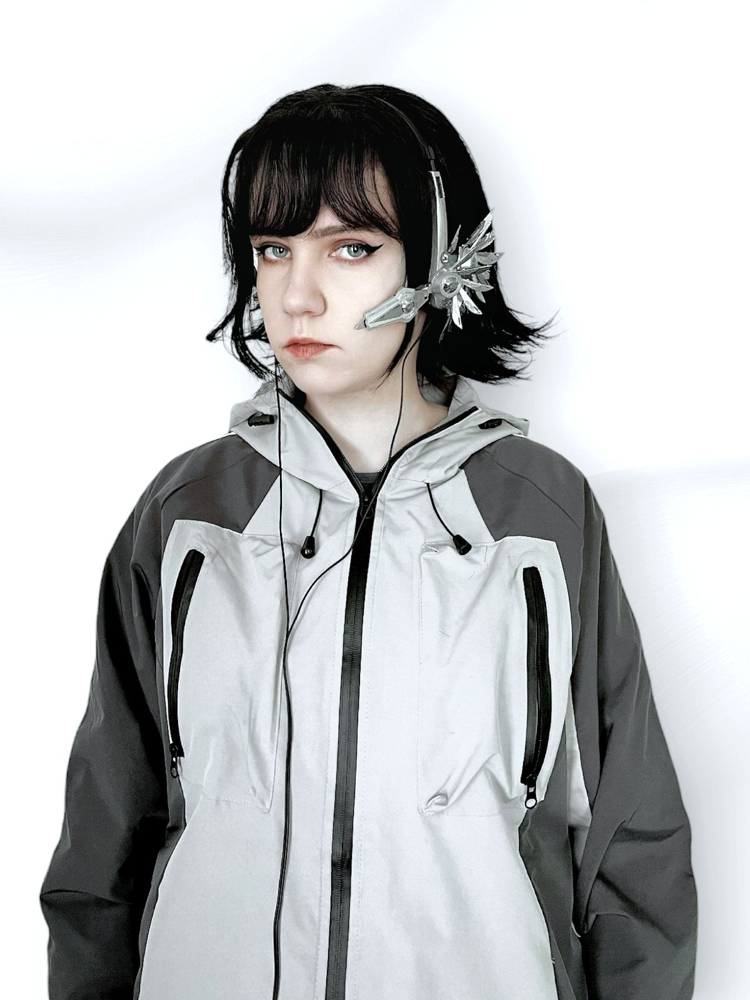
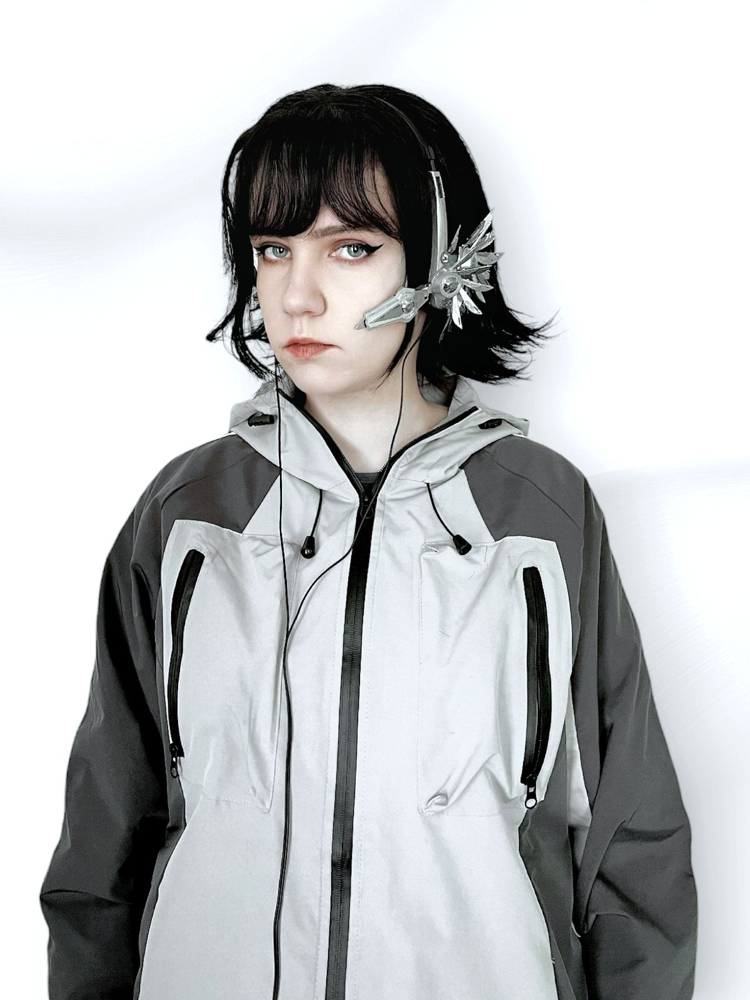

Sobre o projeto
O headset inicialmente era apenas uma pequena idéia que se concretizou através de peças metálicas importadas, peças de outras estruturas e muitas horas de montagem e pintura. O CMS02 contém mais de 100 peças metálicas e metade delas foram pintadas de prata. São duas tonalidades de prateada, um tom é fosco e o outro é espelhado. Foi um longo processo esperar as peças chegarem, desprender cada peça usando um alicate, dobrando e encaixando partes. O que o CyberMecha S02 transmite, é que você pode ser o que quiser e alcançar seus sonhos, desde que você acredite que possa torná-los realidade.